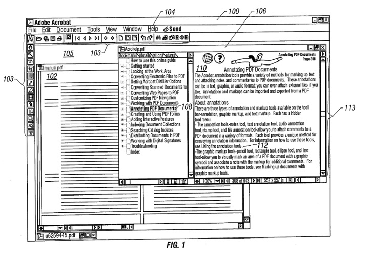
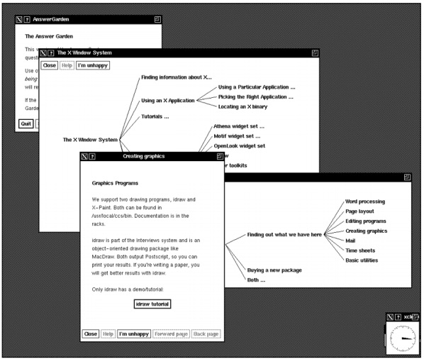
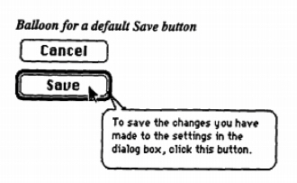
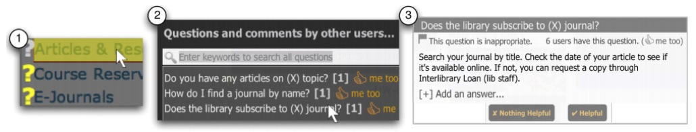
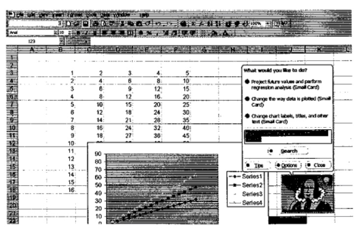
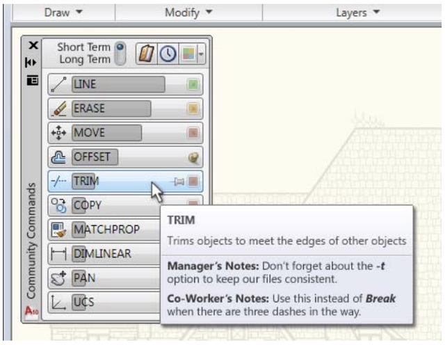
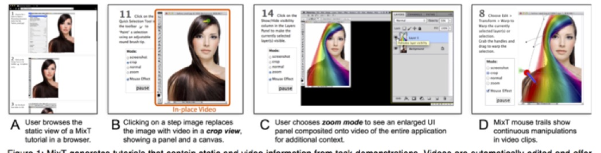
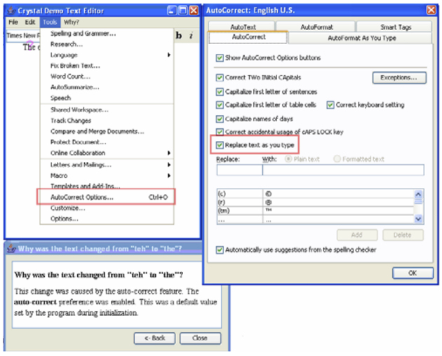

In our discussion of theory at the beginning of this book, I made the case that a precondition of using an interface is learning the interface. One way to make this learning seamless is to minimize gulfs of execution and evaluation. A good designer minimizes gulfs by understanding what people want and need to do with interfaces, and making the mapping between those things and interface actions as tight as possible. Another way that designers achieve this is by simplifying designs, so there's simply less to learn.
Sometimes, however—let's be honest, most of the time—the mapping from goals to action in interfaces isn't so tight. Interfaces introduce new concepts and users have to learn them. Sometimes things go wrong, and to recover from an error, people need to acquire a more nuanced model of how the interface works. And sometimes, interfaces are just irreducibly complex, offering great power that requires instruction and practice to fully harness. And interfaces are only getting more complex: 3D printing, tangible interfaces, sensor-based interactions, new techniques for pointing and text, and the countless other new media we've discussed all require some learning to use successfully.
One way to support this learning is to train people. Apple Stores offer classes on how to use Apple software. Purveyors of augmented and virtual reality devices offer demos that help people acclimate to gestures and heads up displays. Community colleges offer classes on ubiquitous software programs like Microsoft Office, helping people who aren't comfortable tinkering with interfaces to get explicit guidance on their use. YouTube is now full of millions of tutorial videos demonstrating how to use popular interfaces.
The holy grail of interface learning, however, is for interfaces to teach themselves to people. What kinds of help interfaces can be layered on to interfaces to facilitate rapid independent learning? From tooltips to tutorials, in this chapter we'll discuss these approaches, and speculate about the future of help.
There are several basic concepts in software help that are…helpful…to know about when understanding the vast range of ideas that have been explored. For instance, applications need to help with many distinct things even to just bridge gulfs of execution (Grossman et al. 2009):
Norman's concept of a breakdown (Norman 2013) is a useful shorthand for when any of the above five tasks fail to result in learning. Users might self-diagnose the problem, or they might ask for help in an interface or from someone else. This is either resolved or ultimately results the user abandoning the interface. All of these are failures to bridge gulfs of evaluation.
Breakdowns are usually followed by a question. There are many types of questions, each corresponding to the help above (Sellen and Nicol 1995), such as "What kinds of things can I do with this application?", "What is this?", "How do I achieve this goal?", "What does this output mean?", "Where am I?".
Providing answers to these questions usually requires natural language. For example, labeling a button appropriately can help a user learn what a button does or adding a header might help a learner understand the flow of interaction in an application. Choosing good words and phrases is therefore key to learnability. There's just one problem: research shows that there is rarely a best word or phrase. For example, consider all of the words that essentially mean "send my data to the cloud": save, send, submit, upload, sync, etc. Depending on the context and functionality, all of these might be reasonable descriptions. The diversity of words suitable for describing software functionality is called the vocabulary problem (Furnas et al. 1987). This is the empirical observation that there is extreme variability in the words that people choose to express a need, and so the single word that a designer chooses for a feature very rarely corresponds to the words that users choose. In fact, for the tasks that Furnas studied, to get 90% of users to recognize a phrase as related to a goal to be accomplished in a user interface, systems must use nearly 20 unique phrases to cover the range of expected descriptions of that goal. This means that most naive text-based help search mechanisms will either have extremely low recall, or if many aliases have been provided, very low precision. You can see the data here:
This trend of high variability of expected words suggests that any one rarely going to be sufficient for learning. Therefore interfaces will have to do a lot more than just label or index functionality with just one phrase. For example, they may need to index documentation with multiple different descriptions of the same content. They might also have to teach terminology to people so that they know how to find relevant functionality.
Perhaps the earliest form of interface help was to write documentation and provide an interface for browsing it. This approach involves titled articles, help topics, or question and answer pairs. In modern technical support platforms, you might find them called knowledge bases or technical support forums. These platforms vary in whether the designer authors the content or whether the content is crowdsourced from users of the software. For example, a typical support knowledge base might be entirely written by technical writers working for the company that created the software. In contrast, large companies might instead (or in addition to) create question and answer forums in which users ask and answer questions.

While the content that these media contain can often provide assistance for many of the breakdowns a user might have, they have many limitations:
Some research has tried to tackle these problems by providing more sophisticated representations of help content. For example, the Answer Garden system (Ackerman 1998) stored Q&A in a graph, allowing users to find Q&A by either playing a game of "diagnostic twenty questions" or viewing the entire graph of questions. Users could ask questions if they don't find theirs, routing it to an expert, who can add it to the graph of Q&A. An evaluation of the system showed that users loved it when they got answers quickly; they didn’t care where the answer came from. They hated having to wade through every question only to find out the answer wasn't present and they disliked expert's long answers, which experts wrote to appear knowledgeable to superiors.

Other approaches focused on contextualizing help in the form of tooltips, providing documents where the user was having trouble rather than requiring them to navigate elsewhere to find an answer. Balloon help, for example, first appeared on Macintosh System 7, and is now ubiquitous in the form of tooltips:

Tooltips can help with simple tasks, but failed to support long, complex procedures, and rely heavily on designers to anticipate help needs, since they are written at design time (Farkas 1993).
My lab worked on a variation on contextual help that tried to address the problem of static tooltip content. Instead of attaching fixed content to an element, the Lemonaid system (seen below) allowed users to click on an arbitrary element in a user interface to identify the subject of help (Chilana et al. 2012). It then extracted features of the selection such as its labels, position, and current interface state as a query into a database of Q&A that was indexed by these features. This retrieval algorithm returned multiple possible Q&A related to the element, each with an answer authored by the designer. Over time, the system learned associations between which help content was relevant to which elements of a user interface based on what questions users viewed. It also allowed users to submit questions when they could not find a relevant want, crowdsourcing a mapping between user interface elements and questions. This crowdsourced model was quite effective at both identifying gaps in content, but also creating a tight mapping between where people expected to find help and where help appeared in an interface.

In a rare effort to directly commercialize a help system, my collaborators and I co-founded a company called AnswerDash based on this idea. As with any commercialization effort, our product evolved well beyond the initial idea, incorporating page-specific popular questions and other crowdsourced help features. AnswerDash joined a much broader ecosystem of services built on older ideas, such as knowledge bases, tooltip, and tutorials. You can see some of AnswerDash's interactive features in this promotional video:
While many newer products have begun to explore the use of digital voice assistants to provide help, they are not essentially different from all of the help retrieval systems above. The only difference is that rather than a person typing a query to a system, the speak it. That query then gets evaluated using all of the same retrieval mechanisms that have existed over the past several decades, relying on content written by technical writers or other users with answers.
Whereas the systems in the previous section required the user to proactively seek help, there have been several attempts to automatically detect when a user needs help. For example, many rudimentary techniques in help chat clients on the web use simple rules, such as "if the user takes no action on a page for 1 minute, offer to chat". Another basic example is simply providing explanations of how to use a feature in the interface itself, rather than waiting for a user to seek help.
More intelligent techniques monitor activity more systematically, trying to build a more precise model of what a user needs, so it only helps when necessary. For example, the Lumiere system attempted to infer user goals from a history of their actions (Horvitz et al. 1998):

This research was the inspiration for the much-derided Microsoft Clippy, which tried to help in the same way, but did not use any of the sophisticated inferencing techniques. This resulted in Clippy interrupting at unwanted times, offering unwanted help.
Another potentially useful signal of a need for help is when users undo or erase actions they have just performed. One project showed that these events can indicate confusion about how to use a feature, where 90% of the undo and erase episodes indicated severe breakdowns in user’s ability to progress on a task (Akers et al. 2009).
Another approach is targeting proactive help was to classify users by their expertise. For example, one system tracked low-level mouse movements and menu navigation behaviors and found they are strong indicators of application expertise (Hurst et al. 2007). This system used a machine learned classifier to predict level of expertise during application use using features of these input streams with 91% accuracy.
Not all techniques for offering help proactively interrupt. For example, the CommunityCommands system embedded data about feature usage in the interface, passively suggesting to users what features they might find useful based on a user's prior usage history (Li et al. 2011):

While all of the systems above are ultimately driven by content written by humans, some systems assist in streamlining help content generation or generating help content automatically. For example, the MixT system allowed a content author to simply demonstrate an interaction with an application to quickly generate an interactive step-by-step tutorial superior to a screen recording (Chi et al. 2012):

The Crystal system, which I helped invent, created fully automated help content on demand (Myers et al. 2006). It allowed users to click on anything in a word processor and ask "why" questions about it. The system would answer the why question by analyzing the entire history of interactions with the application, along with the application's own independent actions (such as autocomplete or defaults) to generate answers. This example explains why a word was auto-corrected to a user surprised when "teh" was corrected to "the":

While these attempts to generate help automatically can be quite powerful when they work, they are limited. It's not yet possible to generate answers to any question, for example. And it's not clear the answers generated are always comprehensible to people. There needs to be significantly more research on these before they are likely to reach widespread use.
Despite the diversity of help interfaces that try to enable interfaces to teach themselves, there's still a lingering question about whether just how good a help interface can be. Will the gold standard always be having another person—a teacher, essentially—to explain how an interface works? Or is this moot, because there are never enough people with the right expertise at the right time? Or is it possible to just design interfaces that are so learnable, separate help interfaces won't be necessary?
I suspect that interfaces will always require help systems. They are too artificial and change too much to ever eliminate the need for learning, and that means that something or someone will have to do the teaching. If anything, it's people that will adapt, becoming more accustomed to the constant learning necessary to use new interfaces.
And yet, help has never been more necessary. With the rapid expansion of new interface modalities, new types of sensor-based input, and new experiences being designed around these platforms, explicitly teaching how to use interfaces is becoming a central challenge. Industry has yet to place this teaching at the center of its design processes, instead still viewing as restricted to unboxing or later technical support.
Mark S. Ackerman. 1998. Augmenting organizational memory: a field study of Answer Garden. ACM Trans. Inf. Syst. 16, 3 (July 1998), 203-224.
David Akers, Matthew Simpson, Robin Jeffries, and Terry Winograd. 2009. Undo and erase events as indicators of usability problems. In Proceedings of the SIGCHI Conference on Human Factors in Computing Systems (CHI '09). ACM, New York, NY, USA, 659-668.
Pei-Yu Chi, Sally Ahn, Amanda Ren, Mira Dontcheva, Wilmot Li, and Björn Hartmann. 2012. MixT: automatic generation of step-by-step mixed media tutorials. In Proceedings of the 25th annual ACM symposium on User interface software and technology (UIST '12). ACM, New York, NY, USA, 93-102.
Parmit K. Chilana, Andrew J. Ko, and Jacob O. Wobbrock. 2012. LemonAid: selection-based crowdsourced contextual help for web applications. In Proceedings of the SIGCHI Conference on Human Factors in Computing Systems (CHI '12). ACM, New York, NY, USA, 1549-1558.
David K. Farkas. 1993. The role of balloon help. SIGDOC Asterisk J. Comput. Doc. 17, 2 (May 1993), 3-19.
G. W. Furnas, T. K. Landauer, L. M. Gomez, and S. T. Dumais. 1987. The vocabulary problem in human-system communication. Commun. ACM 30, 11 (November 1987), 964-971.
Tovi Grossman, George Fitzmaurice, and Ramtin Attar. 2009. A survey of software learnability: metrics, methodologies and guidelines. In Proceedings of the SIGCHI Conference on Human Factors in Computing Systems (CHI '09). ACM, New York, NY, USA, 649-658.
Eric Horvitz, Jack Breese, David Heckerman, David Hovel, and Koos Rommelse. 1998. The Lumière project: Bayesian user modeling for inferring the goals and needs of software users. In Proceedings of the Fourteenth conference on Uncertainty in artificial intelligence (UAI'98), Gregory F. Cooper and Serafín Moral (Eds.). Morgan Kaufmann Publishers Inc., San Francisco, CA, USA, 256-265.
Amy Hurst, Scott E. Hudson, and Jennifer Mankoff. 2007. Dynamic detection of novice vs. skilled use without a task model. In Proceedings of the SIGCHI Conference on Human Factors in Computing Systems (CHI '07). ACM, New York, NY, USA, 271-280.
Wei Li, Justin Matejka, Tovi Grossman, Joseph A. Konstan, and George Fitzmaurice. 2011. Design and evaluation of a command recommendation system for software applications. ACM Trans. Comput.-Hum. Interact. 18, 2, Article 6 (July 2011), 35 pages.
Brad A. Myers, David A. Weitzman, Andrew J. Ko, and Duen H. Chau. 2006. Answering why and why not questions in user interfaces. In Proceedings of the SIGCHI Conference on Human Factors in Computing Systems (CHI '06), Rebecca Grinter, Thomas Rodden, Paul Aoki, Ed Cutrell, Robin Jeffries, and Gary Olson (Eds.). ACM, New York, NY, USA, 397-406.
Norman, D. A. (2013). The design of everyday things: Revised and expanded edition. Basic books.
Sellen, A., & Nicol, A. (1995). Building User-centered on-line help. In Human-computer interaction.